This is the full illustrated version of a teaching presentation prepared by Dr. Maninder Singh (GMCH Amritsar). Every slide is shown below with its text, so you can read it like an article — or download the original PowerPoint (.pptx) to teach from it. Topics covered include: OVERVIEW; Epidemiology of Spine Fractures — Mechanisms; Spinal Column — Anatomy Overview; Vertebral Anatomy & Three-Column Concept (Denis); AO / Magerl Classification System; TLICS Scoring System — Treatment Decision; ASIA Impairment Scale — Neurological Classification.
Contents — jump to a slide (30)
- SPINE FRACTURES
- OVERVIEW
- Epidemiology of Spine Fractures — Mechanisms
- Spinal Column — Anatomy Overview
- Vertebral Anatomy & Three-Column Concept (Denis)
- AO / Magerl Classification System
- TLICS Scoring System — Treatment Decision
- ASIA Impairment Scale — Neurological Classification
- Imaging Modalities — Comparison & Indications
- CT Scan — Key Findings in Burst Fractures
- Emergency Assessment — Primary & Secondary Survey
- Surgical Indications — Evidence-Based Decision Making
- Posterior Pedicle Screw Fixation — Surgical Technique
- Pedicle Screw Fixation — Radiological Assessment
- Minimally Invasive Spine Surgery (MIS)
- Anterior Surgery — Corpectomy & Cage Reconstruction
- Cervical Spine Injuries — Classification & Management
- Neurological Recovery Rates by ASIA Grade
- Complications — Systematic Overview
- Recent Evidence & Guidelines — Key Trials
- Surgical vs Conservative Outcomes — Neurological Recovery
- Vertebroplasty & Kyphoplasty — Technique
- CASE STUDY 1 — High-Energy Burst Fracture
- CASE STUDY 2 — Osteoporotic Vertebral Fracture
- Treatment Algorithm — Thoracolumbar Spine Fracture
- Future Directions & Emerging Technologies
- Key References & Guidelines
- Rehabilitation Protocol — Phase Timeline
- Long-Term Outcomes — Quality of Life Data
- CONCLUSIONS
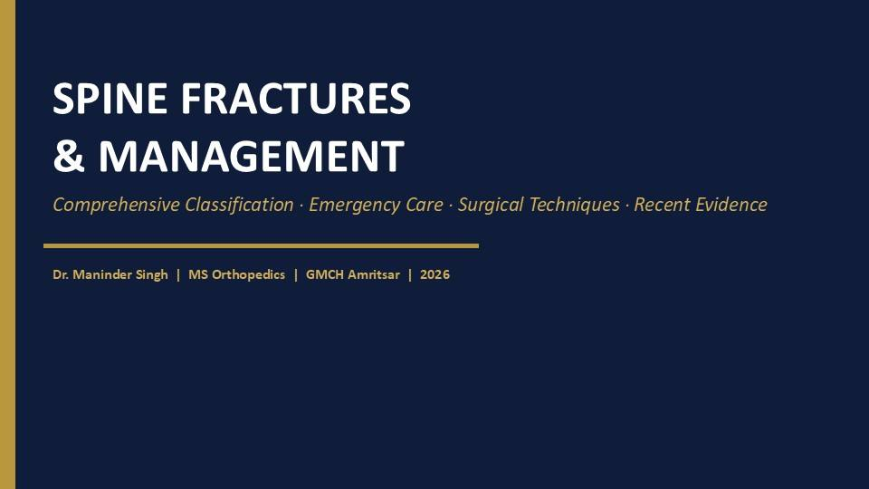
SPINE FRACTURES
- Comprehensive Classification · Emergency Care · Surgical Techniques · Recent Evidence
- Dr. Maninder Singh | MS Orthopedics | GMCH Amritsar | 2026
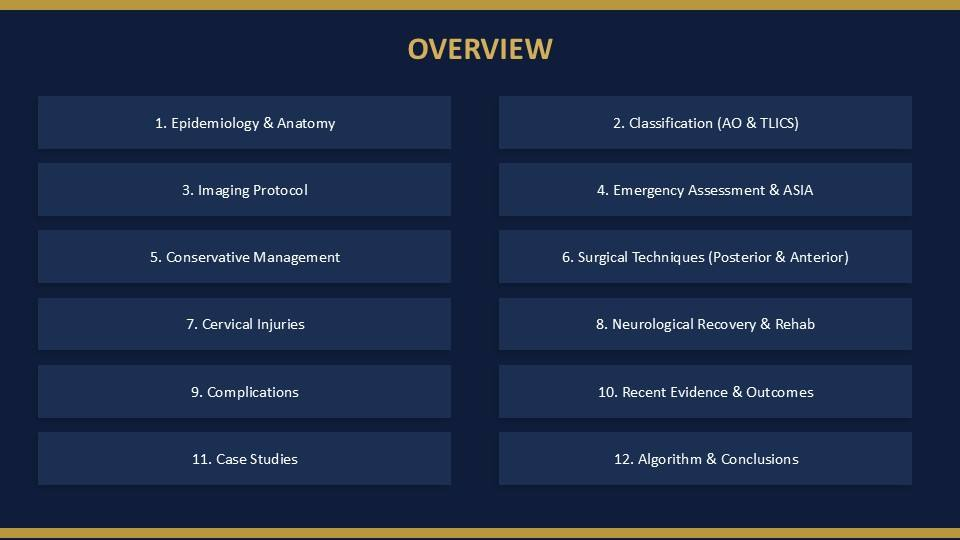
OVERVIEW
- 1. Epidemiology & Anatomy
- 2. Classification (AO & TLICS)
- 3. Imaging Protocol
- 4. Emergency Assessment & ASIA
- 5. Conservative Management
- 6. Surgical Techniques (Posterior & Anterior)
- 7. Cervical Injuries
- 8. Neurological Recovery & Rehab
- 9. Complications
- 10. Recent Evidence & Outcomes
- 11. Case Studies
- 12. Algorithm & Conclusions
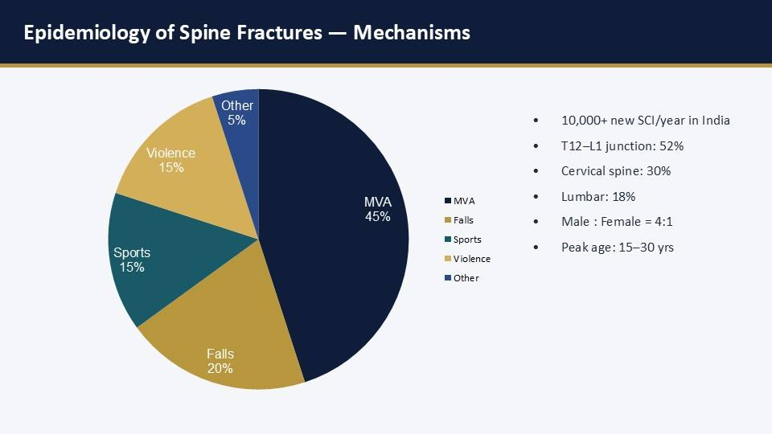
Epidemiology of Spine Fractures — Mechanisms
- 10,000+ new SCI/year in India
- T12–L1 junction: 52%
- Cervical spine: 30%
- Lumbar: 18%
- Male : Female = 4:1
- Peak age: 15–30 yrs
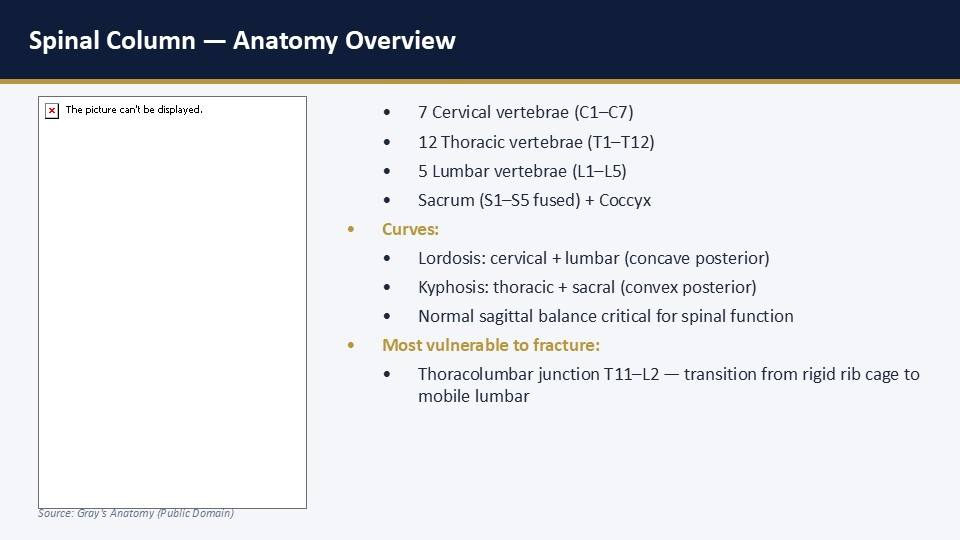
Spinal Column — Anatomy Overview
- 7 Cervical vertebrae (C1–C7)
- 12 Thoracic vertebrae (T1–T12)
- 5 Lumbar vertebrae (L1–L5)
- Sacrum (S1–S5 fused) + Coccyx
- Curves:
- Lordosis: cervical + lumbar (concave posterior)
- Kyphosis: thoracic + sacral (convex posterior)
- Normal sagittal balance critical for spinal function
- Most vulnerable to fracture:
- Thoracolumbar junction T11–L2 — transition from rigid rib cage to mobile lumbar
- Source: Gray's Anatomy (Public Domain)
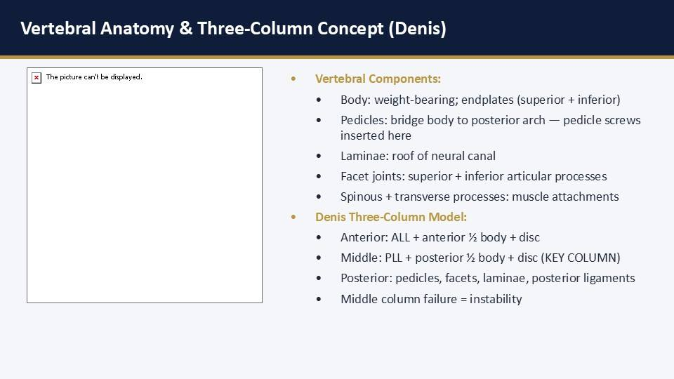
Vertebral Anatomy & Three-Column Concept (Denis)
- Vertebral Components:
- Body: weight-bearing; endplates (superior + inferior)
- Pedicles: bridge body to posterior arch — pedicle screws inserted here
- Laminae: roof of neural canal
- Facet joints: superior + inferior articular processes
- Spinous + transverse processes: muscle attachments
- Denis Three-Column Model:
- Anterior: ALL + anterior ½ body + disc
- Middle: PLL + posterior ½ body + disc (KEY COLUMN)
- Posterior: pedicles, facets, laminae, posterior ligaments
- Middle column failure = instability
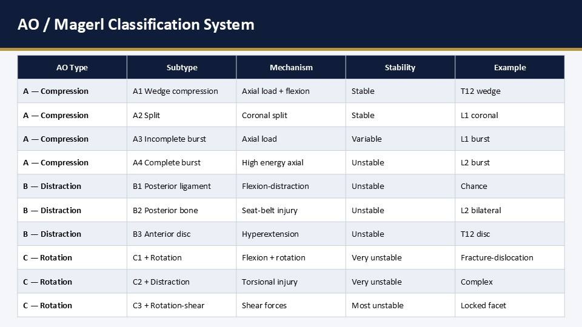
AO / Magerl Classification System
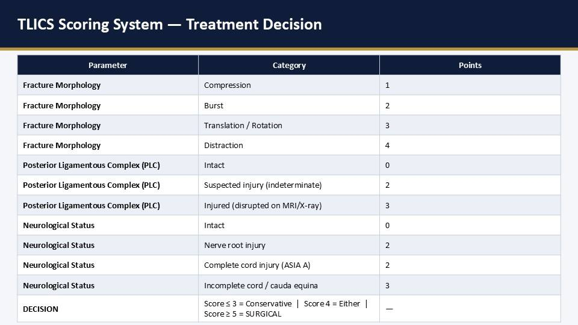
TLICS Scoring System — Treatment Decision
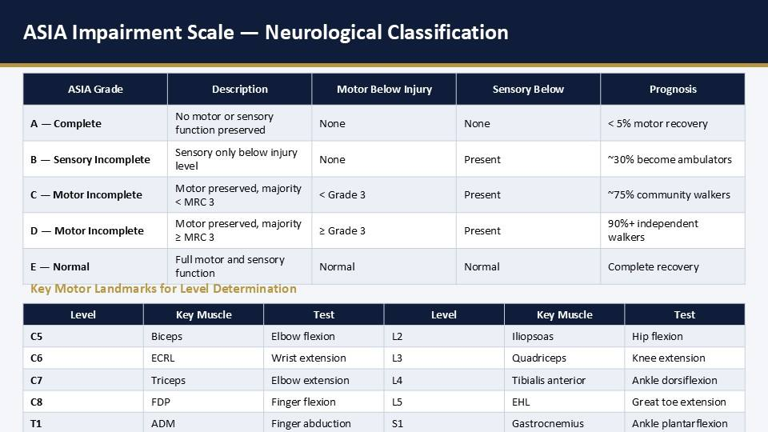
ASIA Impairment Scale — Neurological Classification
Key Motor Landmarks for Level Determination
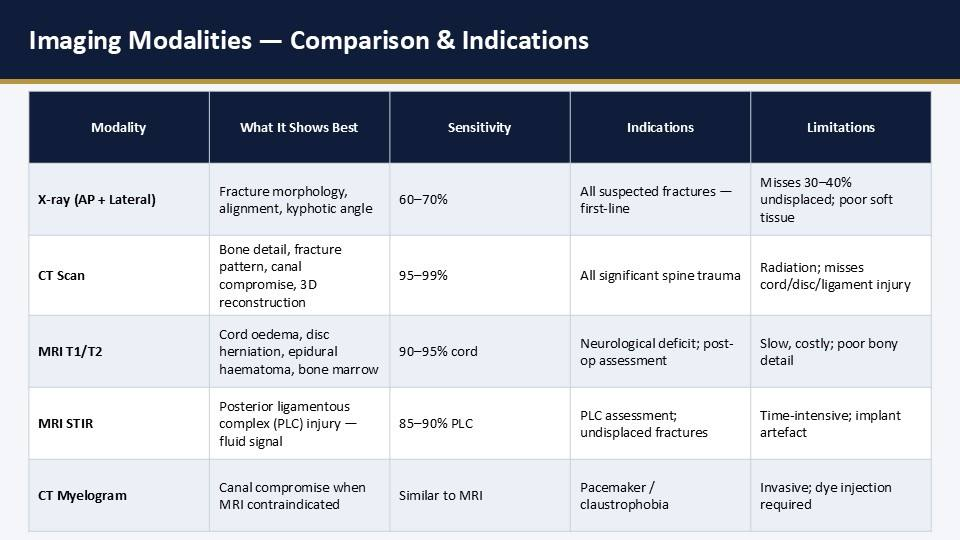
Imaging Modalities — Comparison & Indications
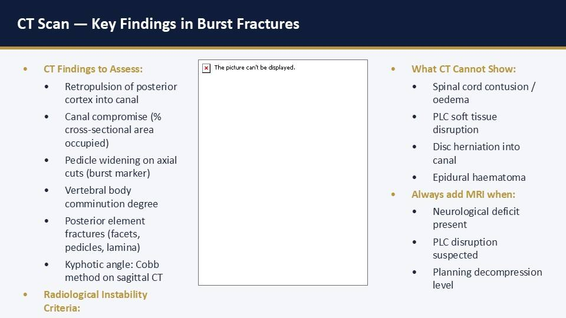
CT Scan — Key Findings in Burst Fractures
- CT Findings to Assess:
- Retropulsion of posterior cortex into canal
- Canal compromise (% cross-sectional area occupied)
- Pedicle widening on axial cuts (burst marker)
- Vertebral body comminution degree
- Posterior element fractures (facets, pedicles, lamina)
- Kyphotic angle: Cobb method on sagittal CT
- Radiological Instability Criteria:
- Kyphosis > 30°
- Height loss > 50%
- Canal compromise > 50%
- Pedicle widening (AO A4)
- What CT Cannot Show:
- Spinal cord contusion / oedema
- PLC soft tissue disruption
- Disc herniation into canal
- Epidural haematoma
- Always add MRI when:
- Neurological deficit present
- PLC disruption suspected
- Planning decompression level
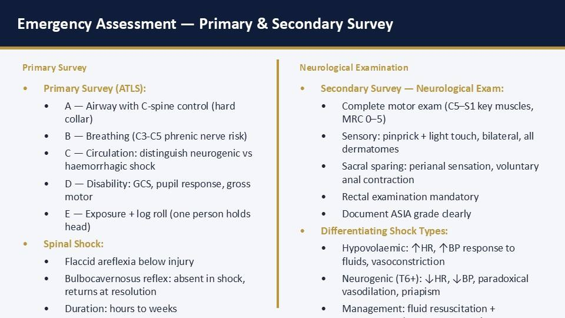
Emergency Assessment — Primary & Secondary Survey
- Primary Survey
- Primary Survey (ATLS):
- A — Airway with C-spine control (hard collar)
- B — Breathing (C3-C5 phrenic nerve risk)
- C — Circulation: distinguish neurogenic vs haemorrhagic shock
- D — Disability: GCS, pupil response, gross motor
- E — Exposure + log roll (one person holds head)
- Spinal Shock:
- Flaccid areflexia below injury
- Bulbocavernosus reflex: absent in shock, returns at resolution
- Duration: hours to weeks
- True neurological assessment only after shock resolves
- Neurological Examination
- Secondary Survey — Neurological Exam:
- Complete motor exam (C5–S1 key muscles, MRC 0–5)
- Sensory: pinprick + light touch, bilateral, all dermatomes
- Sacral sparing: perianal sensation, voluntary anal contraction
- Rectal examination mandatory
- Document ASIA grade clearly
- Differentiating Shock Types:
- Hypovolaemic: ↑HR, ↑BP response to fluids, vasoconstriction
- Neurogenic (T6+): ↓HR, ↓BP, paradoxical vasodilation, priapism
- Management: fluid resuscitation + vasopressors (MAP > 85 mmHg)
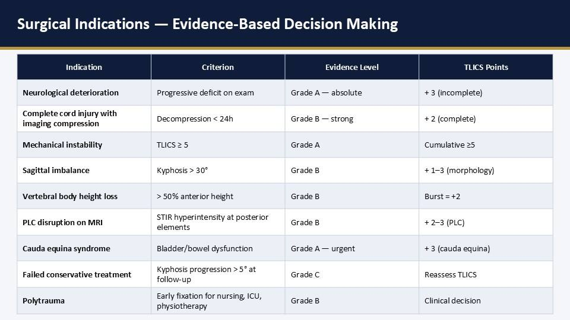
Surgical Indications — Evidence-Based Decision Making
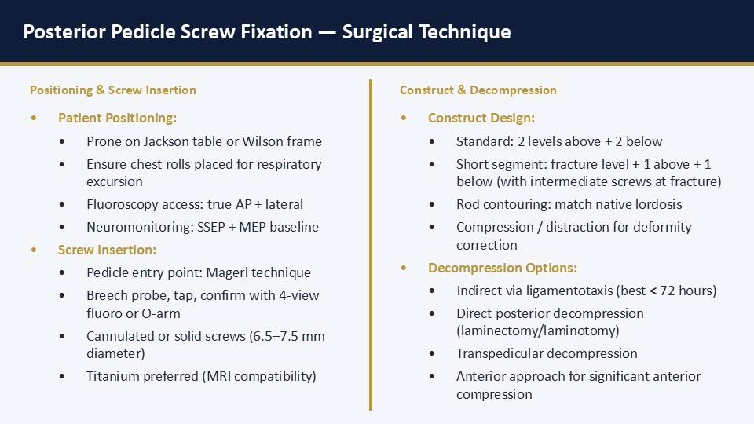
Posterior Pedicle Screw Fixation — Surgical Technique
- Positioning & Screw Insertion
- Patient Positioning:
- Prone on Jackson table or Wilson frame
- Ensure chest rolls placed for respiratory excursion
- Fluoroscopy access: true AP + lateral
- Neuromonitoring: SSEP + MEP baseline
- Screw Insertion:
- Pedicle entry point: Magerl technique
- Breech probe, tap, confirm with 4-view fluoro or O-arm
- Cannulated or solid screws (6.5–7.5 mm diameter)
- Titanium preferred (MRI compatibility)
- Construct & Decompression
- Construct Design:
- Standard: 2 levels above + 2 below
- Short segment: fracture level + 1 above + 1 below (with intermediate screws at fracture)
- Rod contouring: match native lordosis
- Compression / distraction for deformity correction
- Decompression Options:
- Indirect via ligamentotaxis (best < 72 hours)
- Direct posterior decompression (laminectomy/laminotomy)
- Transpedicular decompression
- Anterior approach for significant anterior compression
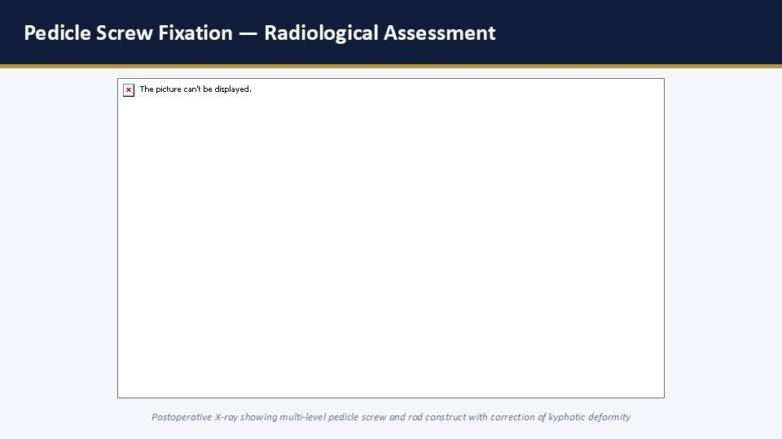
Pedicle Screw Fixation — Radiological Assessment
Postoperative X-ray showing multi-level pedicle screw and rod construct with correction of kyphotic deformity
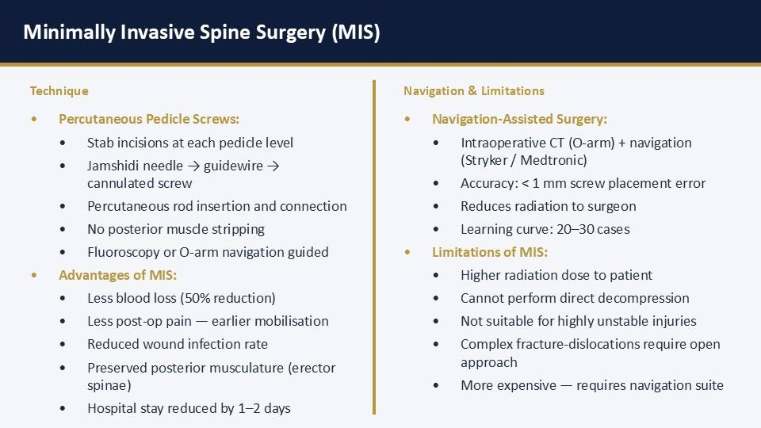
Minimally Invasive Spine Surgery (MIS)
- Technique
- Percutaneous Pedicle Screws:
- Stab incisions at each pedicle level
- Jamshidi needle → guidewire → cannulated screw
- Percutaneous rod insertion and connection
- No posterior muscle stripping
- Fluoroscopy or O-arm navigation guided
- Advantages of MIS:
- Less blood loss (50% reduction)
- Less post-op pain — earlier mobilisation
- Reduced wound infection rate
- Preserved posterior musculature (erector spinae)
- Hospital stay reduced by 1–2 days
- Navigation & Limitations
- Navigation-Assisted Surgery:
- Intraoperative CT (O-arm) + navigation (Stryker / Medtronic)
- Accuracy: < 1 mm screw placement error
- Reduces radiation to surgeon
- Learning curve: 20–30 cases
- Limitations of MIS:
- Higher radiation dose to patient
- Cannot perform direct decompression
- Not suitable for highly unstable injuries
- Complex fracture-dislocations require open approach
- More expensive — requires navigation suite
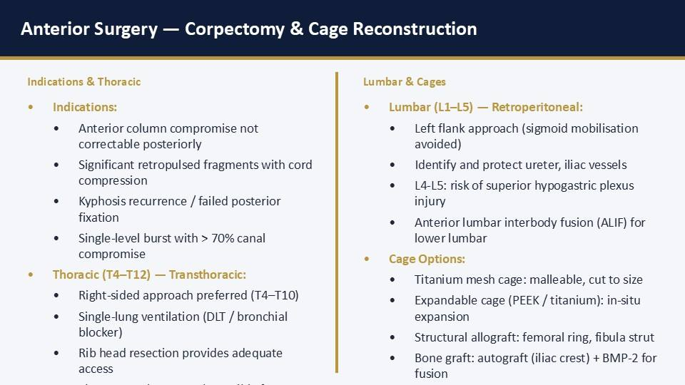
Anterior Surgery — Corpectomy & Cage Reconstruction
- Indications & Thoracic
- Indications:
- Anterior column compromise not correctable posteriorly
- Significant retropulsed fragments with cord compression
- Kyphosis recurrence / failed posterior fixation
- Single-level burst with > 70% canal compromise
- Thoracic (T4–T12) — Transthoracic:
- Right-sided approach preferred (T4–T10)
- Single-lung ventilation (DLT / bronchial blocker)
- Rib head resection provides adequate access
- Thoracoscopic approach possible for selected cases
- Lumbar & Cages
- Lumbar (L1–L5) — Retroperitoneal:
- Left flank approach (sigmoid mobilisation avoided)
- Identify and protect ureter, iliac vessels
- L4-L5: risk of superior hypogastric plexus injury
- Anterior lumbar interbody fusion (ALIF) for lower lumbar
- Cage Options:
- Titanium mesh cage: malleable, cut to size
- Expandable cage (PEEK / titanium): in-situ expansion
- Structural allograft: femoral ring, fibula strut
- Bone graft: autograft (iliac crest) + BMP-2 for fusion
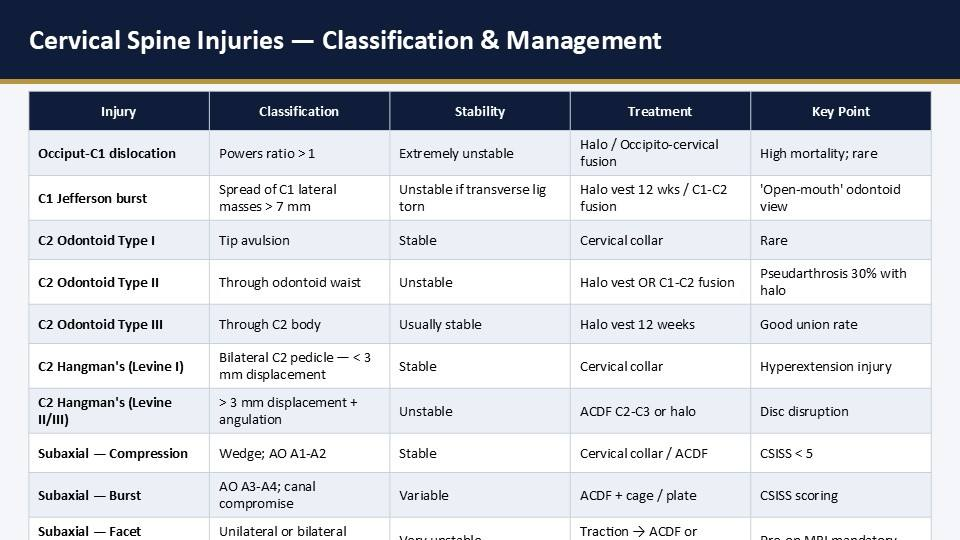
Cervical Spine Injuries — Classification & Management
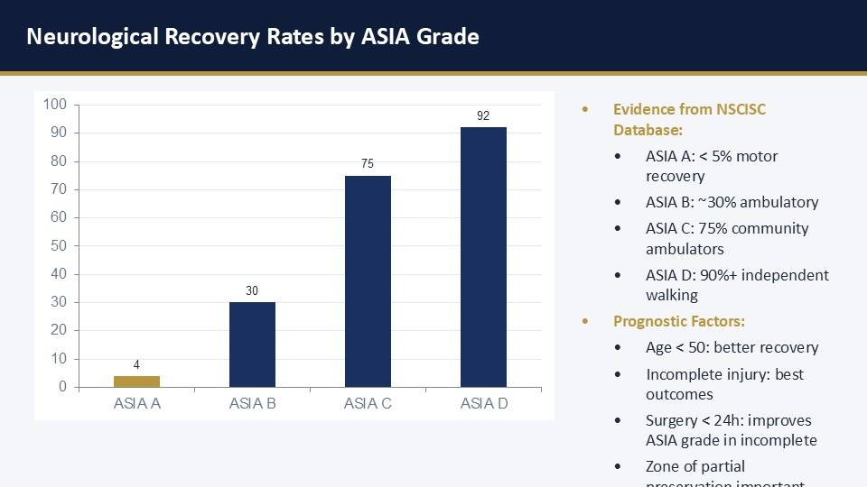
Neurological Recovery Rates by ASIA Grade
- Evidence from NSCISC Database:
- ASIA A: < 5% motor recovery
- ASIA B: ~30% ambulatory
- ASIA C: 75% community ambulators
- ASIA D: 90%+ independent walking
- Prognostic Factors:
- Age < 50: better recovery
- Incomplete injury: best outcomes
- Surgery < 24h: improves ASIA grade in incomplete
- Zone of partial preservation important
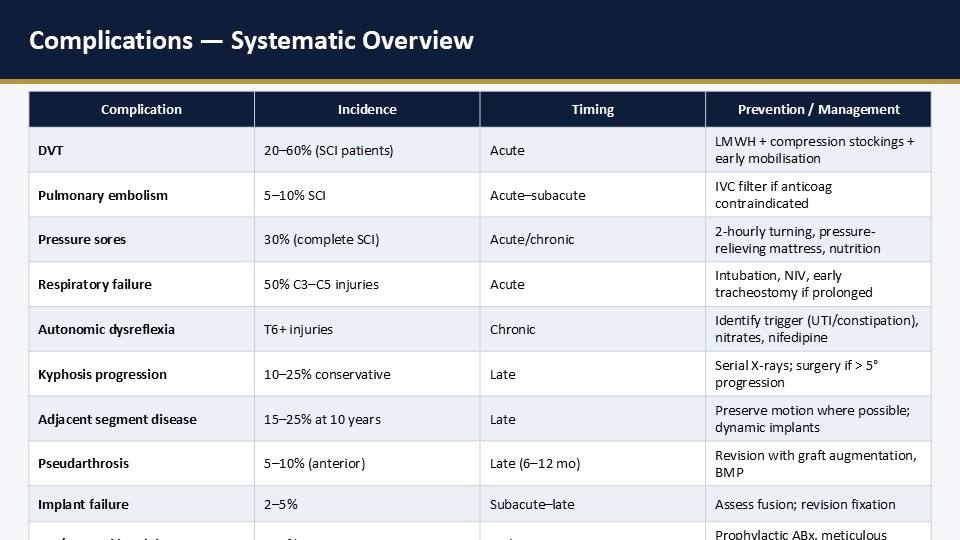
Complications — Systematic Overview
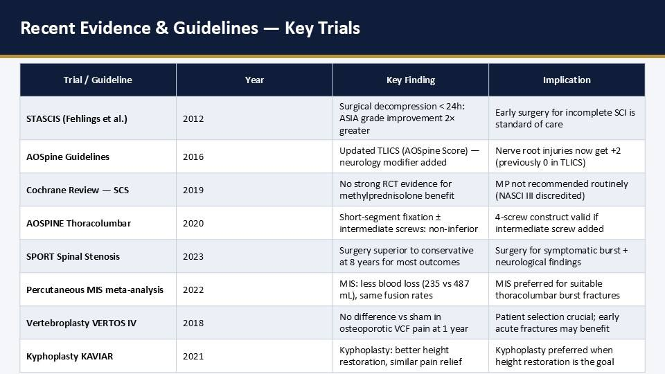
Recent Evidence & Guidelines — Key Trials
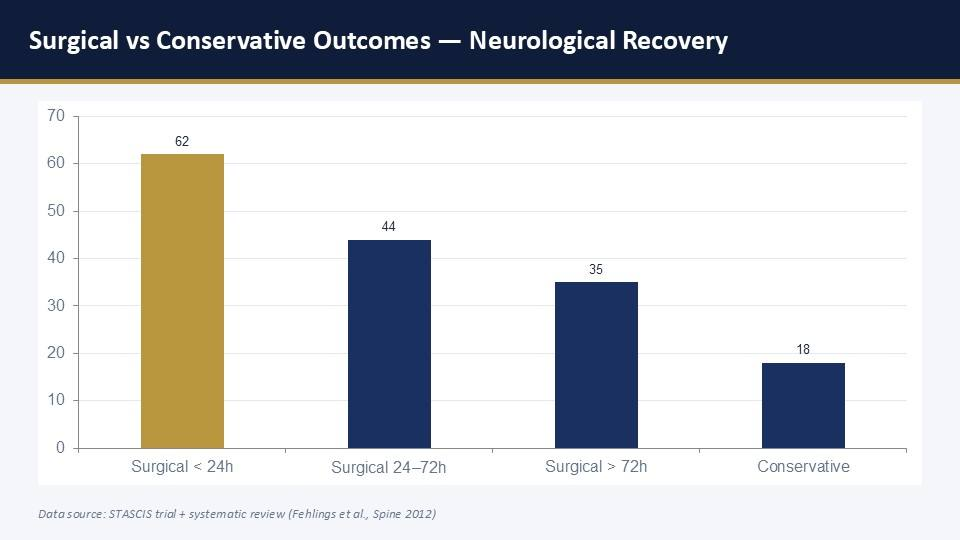
Surgical vs Conservative Outcomes — Neurological Recovery
Data source: STASCIS trial + systematic review (Fehlings et al., Spine 2012)
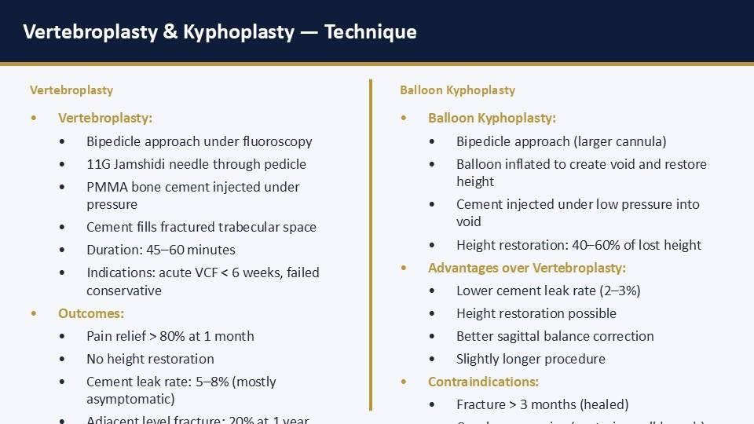
Vertebroplasty & Kyphoplasty — Technique
- Vertebroplasty
- Vertebroplasty:
- Bipedicle approach under fluoroscopy
- 11G Jamshidi needle through pedicle
- PMMA bone cement injected under pressure
- Cement fills fractured trabecular space
- Duration: 45–60 minutes
- Indications: acute VCF < 6 weeks, failed conservative
- Outcomes:
- Pain relief > 80% at 1 month
- No height restoration
- Cement leak rate: 5–8% (mostly asymptomatic)
- Adjacent level fracture: 20% at 1 year
- Balloon Kyphoplasty
- Balloon Kyphoplasty:
- Bipedicle approach (larger cannula)
- Balloon inflated to create void and restore height
- Cement injected under low pressure into void
- Height restoration: 40–60% of lost height
- Advantages over Vertebroplasty:
- Lower cement leak rate (2–3%)
- Height restoration possible
- Better sagittal balance correction
- Slightly longer procedure
- Contraindications:
- Fracture > 3 months (healed)
- Canal compromise (posterior wall breach)
- Active infection / coagulopathy
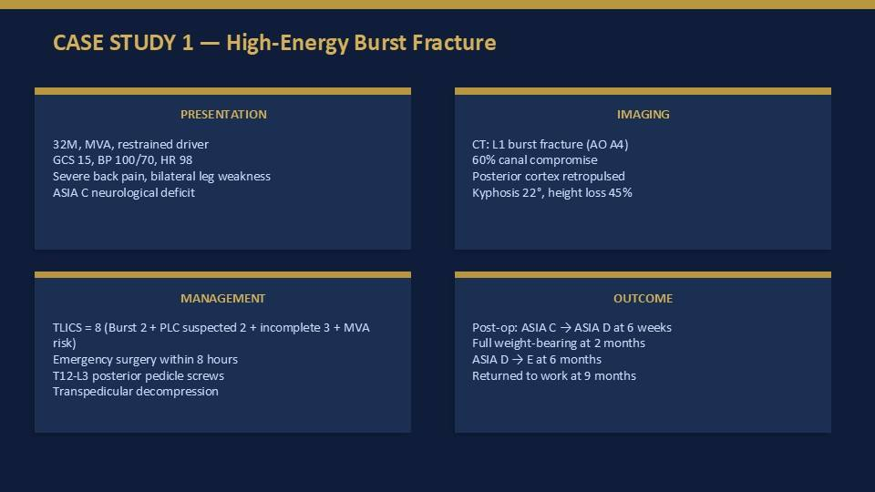
CASE STUDY 1 — High-Energy Burst Fracture
- PRESENTATION
- 32M, MVA, restrained driver
- GCS 15, BP 100/70, HR 98
- Severe back pain, bilateral leg weakness
- ASIA C neurological deficit
- IMAGING
- CT: L1 burst fracture (AO A4)
- 60% canal compromise
- Posterior cortex retropulsed
- Kyphosis 22°, height loss 45%
- MANAGEMENT
- TLICS = 8 (Burst 2 + PLC suspected 2 + incomplete 3 + MVA risk)
- Emergency surgery within 8 hours
- T12-L3 posterior pedicle screws
- Transpedicular decompression
- OUTCOME
- Post-op: ASIA C → ASIA D at 6 weeks
- Full weight-bearing at 2 months
- ASIA D → E at 6 months
- Returned to work at 9 months
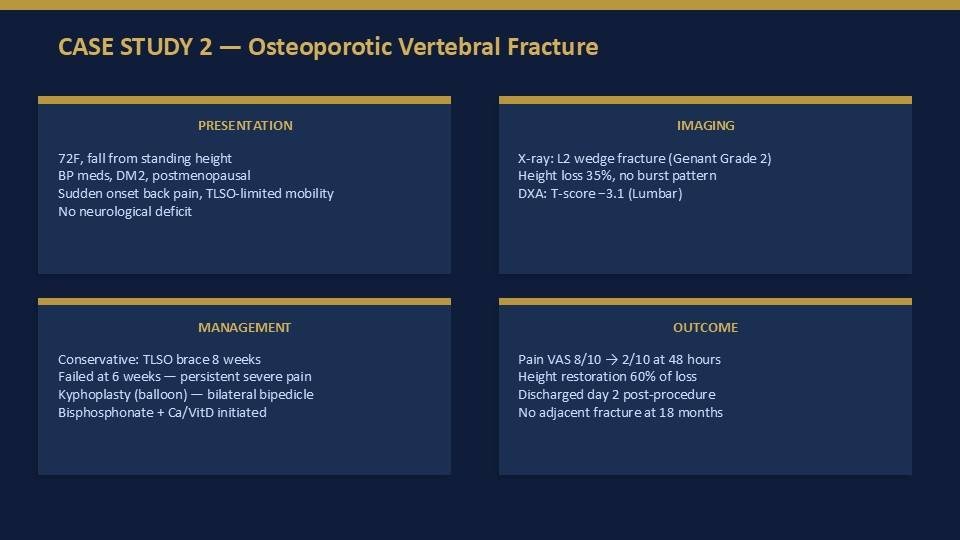
CASE STUDY 2 — Osteoporotic Vertebral Fracture
- PRESENTATION
- 72F, fall from standing height
- BP meds, DM2, postmenopausal
- Sudden onset back pain, TLSO-limited mobility
- No neurological deficit
- IMAGING
- X-ray: L2 wedge fracture (Genant Grade 2)
- Height loss 35%, no burst pattern
- DXA: T-score −3.1 (Lumbar)
- MANAGEMENT
- Conservative: TLSO brace 8 weeks
- Failed at 6 weeks — persistent severe pain
- Kyphoplasty (balloon) — bilateral bipedicle
- Bisphosphonate + Ca/VitD initiated
- OUTCOME
- Pain VAS 8/10 → 2/10 at 48 hours
- Height restoration 60% of loss
- Discharged day 2 post-procedure
- No adjacent fracture at 18 months
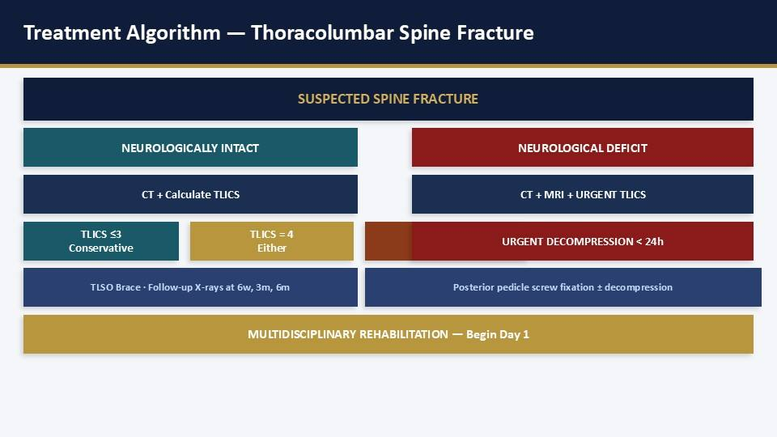
Treatment Algorithm — Thoracolumbar Spine Fracture
- SUSPECTED SPINE FRACTURE
- NEUROLOGICALLY INTACT
- NEUROLOGICAL DEFICIT
- CT + Calculate TLICS
- CT + MRI + URGENT TLICS
- TLICS ≤3
- Conservative
- TLICS = 4
- Either
- TLICS ≥5
- Surgical
- URGENT DECOMPRESSION < 24h
- TLSO Brace · Follow-up X-rays at 6w, 3m, 6m
- Posterior pedicle screw fixation ± decompression
- MULTIDISCIPLINARY REHABILITATION — Begin Day 1
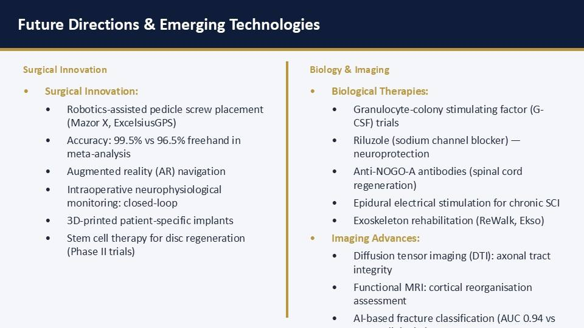
Future Directions & Emerging Technologies
- Surgical Innovation
- Surgical Innovation:
- Robotics-assisted pedicle screw placement (Mazor X, ExcelsiusGPS)
- Accuracy: 99.5% vs 96.5% freehand in meta-analysis
- Augmented reality (AR) navigation
- Intraoperative neurophysiological monitoring: closed-loop
- 3D-printed patient-specific implants
- Stem cell therapy for disc regeneration (Phase II trials)
- Biology & Imaging
- Biological Therapies:
- Granulocyte-colony stimulating factor (G-CSF) trials
- Riluzole (sodium channel blocker) — neuroprotection
- Anti-NOGO-A antibodies (spinal cord regeneration)
- Epidural electrical stimulation for chronic SCI
- Exoskeleton rehabilitation (ReWalk, Ekso)
- Imaging Advances:
- Diffusion tensor imaging (DTI): axonal tract integrity
- Functional MRI: cortical reorganisation assessment
- AI-based fracture classification (AUC 0.94 vs 0.87 radiologist)
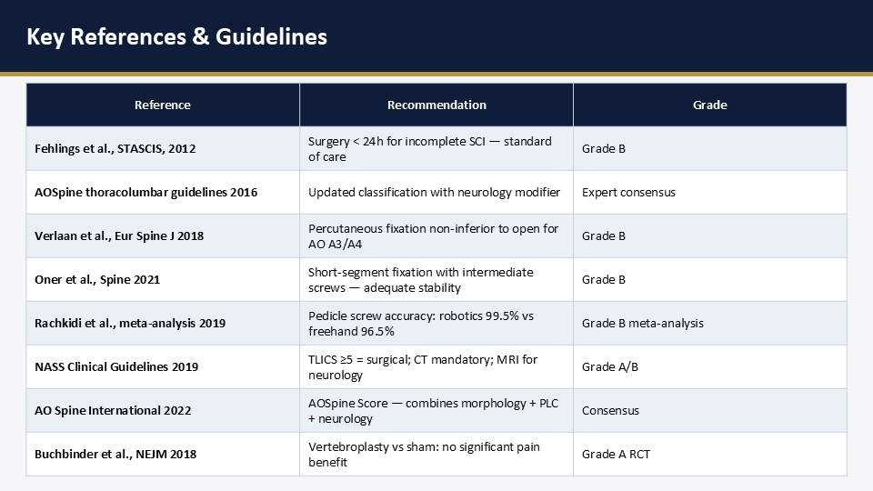
Key References & Guidelines
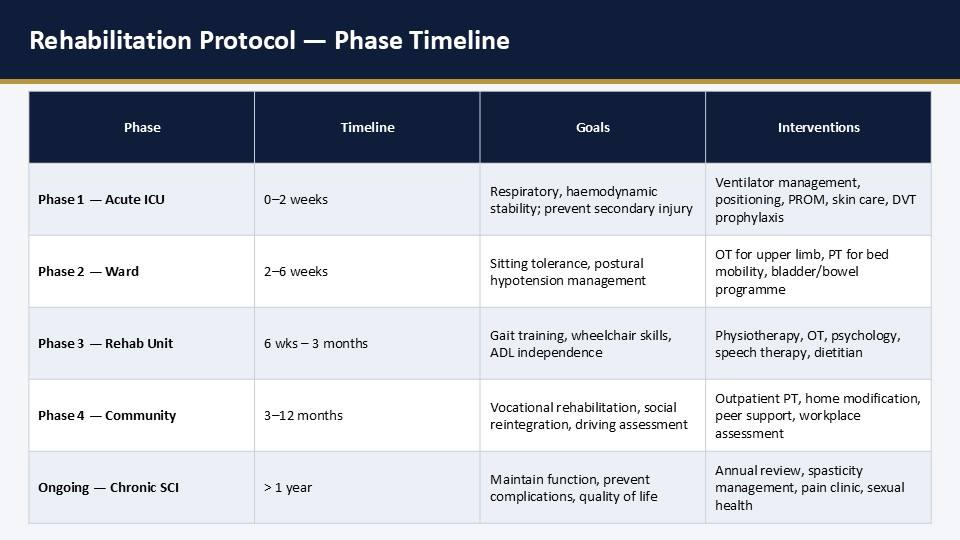
Rehabilitation Protocol — Phase Timeline
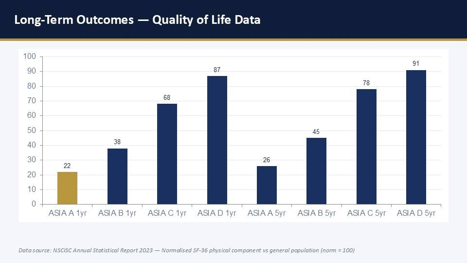
Long-Term Outcomes — Quality of Life Data
Data source: NSCISC Annual Statistical Report 2023 — Normalised SF-36 physical component vs general population (norm = 100)
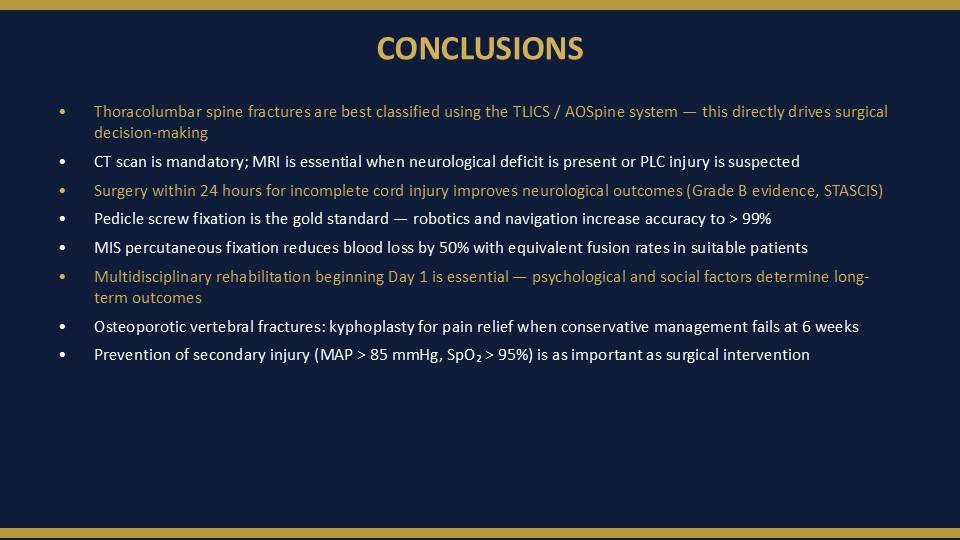
CONCLUSIONS
- Thoracolumbar spine fractures are best classified using the TLICS / AOSpine system — this directly drives surgical decision-making
- CT scan is mandatory; MRI is essential when neurological deficit is present or PLC injury is suspected
- Surgery within 24 hours for incomplete cord injury improves neurological outcomes (Grade B evidence, STASCIS)
- Pedicle screw fixation is the gold standard — robotics and navigation increase accuracy to > 99%
- MIS percutaneous fixation reduces blood loss by 50% with equivalent fusion rates in suitable patients
- Multidisciplinary rehabilitation beginning Day 1 is essential — psychological and social factors determine long-term outcomes
- Osteoporotic vertebral fractures: kyphoplasty for pain relief when conservative management fails at 6 weeks
- Prevention of secondary injury (MAP > 85 mmHg, SpO₂ > 95%) is as important as surgical intervention
Use this deck in your teaching
The original editable PowerPoint is free to download for non-commercial teaching, with credit to the author. Questions or corrections? Contact us.
About this deck
Prepared by Dr. Maninder Singh (MS Orthopaedics, Associate Professor, GMCH Amritsar) for postgraduate and clinical teaching. Where images are from open-licence sources (for example Wikimedia Commons), the licence and author appear on the slide. See our editorial policy. Educational use only — not medical advice; see Terms & Medical Disclaimer.